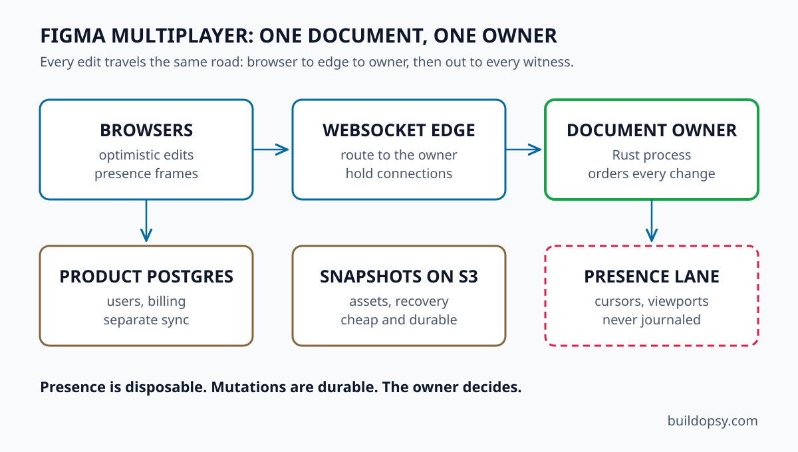

1. How Figma Multiplayer Works in 60 Seconds
Open a Figma file and your browser downloads a copy plus connects over a WebSocket to the server process that owns that document. You drag a rectangle. Your client applies the move instantly, sends the operation to the owner, receives the canonical stream back plus renders everyone else's confirmed edits as they arrive.
The load-bearing rule is one document, one owner. A single process holds the active state, applies operations in arrival order plus broadcasts accepted changes. Two unrelated documents never share a lock. Clients can stay optimistic because the server always has the final word.
2. The Components of Figma Architecture
Browser clients render the canvas plus send edits and presence over persistent WebSockets. The WebSocket edge terminates connections plus routes each document to its owner process. The document owner holds live state, orders operations plus fans out accepted changes. A product-data layer in Postgres stores users, teams, comments plus billing through a separate synchronization system, so a slow comment service can never freeze the canvas. Object storage keeps snapshots, assets plus recovery history.
The boundary between live state and product data is the smartest line in the drawing. Document synchronization needs low-latency ordered mutations. Billing needs durable transactional truth. Figma refused to serve both from one magic realtime service.
3. Conflict Resolution Without Pure CRDT
Every discussion of collaborative editing eventually says CRDT. Figma's answer is more careful. The company rejected Operational Transformation for the document model plus skipped pure peer-to-peer CRDT. The server tracks the latest value sent for each property on each object. Unrelated properties all survive. The same property goes to whoever the server ordered last.
That last-writer-wins rule works because design tools rarely see two people editing the exact same property in the exact same instant. Tree moves get stricter treatment: the server validates the document tree plus rejects operations that would create a cycle. Ordering uses fractional indexing, so each child sits at a position between zero and one plus inserting between two children means picking a fraction between them.
4. Why Figma Rewrote Its Engine in Rust
The first multiplayer server ran TypeScript on shared workers. One slow serialization could block the single-threaded worker plus delay every document attached to it. The stopgap was a pool of heavy workers plus humans moving large files by hand. A spreadsheet quietly became a scheduler.
The rewrite moved document operations into a Rust child process while Node.js kept network handling. Per-document processes removed the shared-worker blast radius. Serialization ran more than ten times faster. Note what they did not rewrite: HTTP handlers, routing plus everything without a measured bottleneck. Move only the code with a structural bottleneck, verified by numbers.
5. How Figma Scales: The RPS Math
Figma reported more than 13 million monthly users in its 2025 prospectus. A transparent scenario turns that into load: 4 million daily users at 35 minutes each, one request every 20 seconds, gives about 4,860 average RPS. A six-times peak factor pushes the control plane near 29,000 RPS.
Presence dwarfs requests. Around 1.5 million concurrent users sending two coalesced cursor frames per second produce 3 million ephemeral frames per second before fan-out. Document mutations add roughly 400,000 per second on average with bursts near 2.4 million. The modeled peak across the system lands near 65,000 RPS.
| Workload | Scenario | Result |
|---|---|---|
| API plus sync | 4M DAU, 35 min sessions | 4.9k avg RPS |
| Peak multiplier | 6x busy period | ~29k RPS |
| Presence frames | 1.5M users at 2 per sec | 3M frames per sec |
| Mutations | 2M editors, 1 per 5 sec | 400k per sec |
Price any throughput shape against your own traffic with the RPS envelope calculator. The full scenario tables plus the 1M RPS thought experiment live in the deep postmortem.
6. What Figma Architecture Costs
Figma's 2025 filing anchors the discussion: about $185.5 million in cost of revenue, a bucket that includes infrastructure plus hosting plus AI inference plus support staff. Against that anchor, a modeled scenario prices the collaboration platform near $825,000 to $1.75M per month: WebSocket edge plus workers, memory-heavy document processes, storage plus transfer, product data plus search plus AI.
The sharpest number comes from the thought experiment. At one million events per second, an unoptimized fan-out bills about $3.89M per month. Coalescing drags, dropping stale presence, loading subscribed subtrees plus caching at the edge cuts origin traffic to a quarter. The proposed envelope lands near $948k per month. Protocol design decides how much CPU you need. Language choice only prices it.
7. The Verdict: What to Steal
Steal the single-writer rule before anything else. Per-document ownership removes consensus from the hot path. Most products have some entity begging for exactly that treatment. Steal the boundary between ephemeral and durable next. Presence frames must never touch the journal. Every system has a cursor equivalent masquerading as a financial record.
Steal the isolation discipline last. Move only code with a measured bottleneck, verified by numbers. Let the boring parts run boring infrastructure.
Do not steal the exact protocol. Your product is not a design canvas. Last-writer-wins is only correct where users rarely collide on the same property. What transfers is the refusal: refuse to pay for complexity the product does not need, refuse to journal the disposable, refuse to share workers between strangers.
The canvas feels simple because the server does the arguing somewhere else. Yours should feel simple for the same reason.
8. Frequently Asked Questions
How does Figma multiplayer work?
Browser clients connect over WebSockets to the process that owns their document. Edits apply optimistically, the server orders them authoritatively plus broadcasts accepted changes to every connected client.
Does Figma use CRDTs?
Not purely. Figma uses server-authoritative ordering with property-level last-writer-wins plus tree validation, a better fit for spatial design than peer-to-peer convergence.
Why did Figma rewrite its engine in Rust?
Shared TypeScript workers let one heavy document delay every document on the worker. A Rust child process per document isolated the blast radius plus made serialization more than ten times faster.
What database does Figma use?
Postgres holds product data such as users, teams, comments plus billing. Live document state lives in per-document server processes, synchronized separately from the database.
Sources and Method
Architecture facts come from Figma engineering posts plus public filings. RPS and cost figures are the labeled scenario model from the companion teardown, not Figma disclosures. For the complete tables, see the full postmortem.
- Figma Engineering: How Figma's Multiplayer Technology Works
- Figma Engineering: How Mozilla's Rust Dramatically Improved Our Server-Side Performance
- Figma Engineering: Realtime Editing of Ordered Sequences
- Figma Engineering: Improving Performance with Incremental Frame Loading
- Figma 2025 Annual Filing
- Figma IPO Prospectus